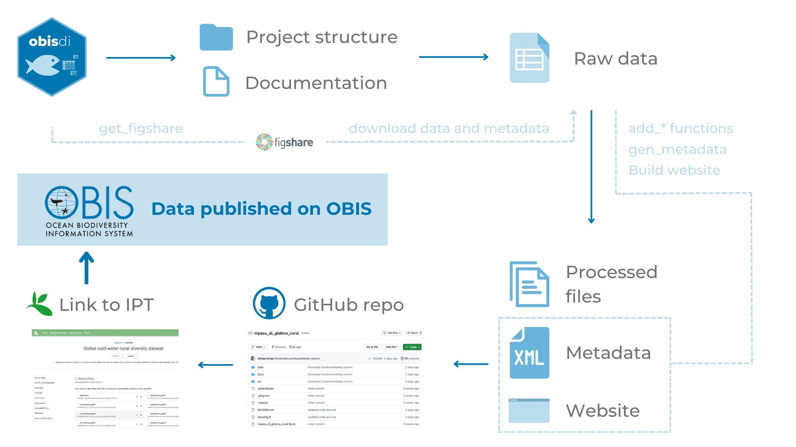

# Get records from Zenodo using API connection
# Create a function to retrieve the records for a certain query
get_zenodo <- function(query){
response <- httr::GET('https://zenodo.org/api/records',
query = list(q = query,
size = 2000, page = 1))
t_resp <- httr::content(response, "parsed", encoding = "UTF-8")
results <- lapply(t_resp, function(x){
data.frame(title = x$title, doi = x$doi)
})
results <- do.call("rbind", results)
return(results)
}
zen_results <- get_zenodo("+access_right:open +resource_type.type:dataset +title:marine +title:species")
write.csv(zen_results, paste0("source_lists/zen_", format(Sys.Date(), "%d%m%Y"), ".csv"),
row.names = F)5 Obtaining additional biodiversity data
As part of the Deliverable 1 of the WP3, we looked for additional marine biodiversity data related to Europe that was available elsewhere but not on OBIS. This included data published in the literature, data repositories and other biodiversity databases like GBIF.
Continuous process
This process is still ongoing and will keep until the end of the project.
We used the following procedures for each source:
- Literature/repositories: after finding the appropriate and relevant sources (see below) we ingested the data using the
obisdipackage structure. - GBIF: after identifying potential datasets available on GBIF, we followed the data harvesting procedure followed by OBIS nodes (details below).
5.1 obisdi package
For enabling a streamlined and standard ingestion of data throughout the project we developed the obisdi package, which is available on GitHub. The idea behind the package (and basically all the structure) came from the Tracking Invasive Alien Species (TrIAS) project’ checklist recipe (see more here), which provides a standard structure for mapping data to the Darwin Core standard. Using this structure, all the mapping is fully documented and can be tracked. Also, it’s possible to directly ingest the data to the IPT from a GitHub repository.
Every project created with the obisdi package have the following structure:
- a folder for data, containing two other folders - one for raw data (where the original data files are stored) and one for processed data (where the final edited files are stored).
- a README file containing the basic details about the dataset and the repository
- an RMarkdown file which contains the mapping to the DwC standard.
By knitting the RMarkdown files, it’s also possible to generate a docs folder that can be used as a website (through GitHub pages), providing an easy access information for the general community.

5.2 Additional data from literature and repositories
5.2.1 BioTIME
BioTIME is a database containing time series of ecological data from the terrestrial, freshwater and marine realm. We downloaded the full database (available here) and using the metadata information we identified those marine studies (on the Europe region) which were not available on OBIS. This identification procedure was based on a fuzzy matching of the titles with the OBIS dataset titles. For those that were probably relevant, we manually checked the datasets to confirm its relevance.
At the end we identified 4 new datasets that could be included, and proceeded with the data ingestion.
Warning
At this moment, only one of the identified datasets was already ingested. The others are under processing and will soon be ingested.
5.2.2 Literature
We searched on Web of Science for articles that could potentially contain datasets valuable for our project. We used the following search string: TS=((marine OR ocean* OR coastal) AND ((“biodiversity data”) OR (dataset) OR (“time series” OR time-series)) AND (species OR occurrence OR biodiversity OR fauna) AND (europe* OR global)). From the returned list (~2000 articles) we (1) matched the titles with the dataset names or bibliographic citations from OBIS to verify if the dataset was already included on OBIS, and (2) screened (manually) to identify if the dataset was valuable. Note that this is not a systematic review, but an exploratory search. Because the number of records was considerably large and the screening involves evaluating the data quality and the methods that generated it, in this first phase of the project we screened the first 100 records (ordered by relevance), and will keep screening in the following months.
5.2.3 Data repositories
We searched the data repositories FigShare, Zenodo, and Dryad for datasets linked with marine data on the region of our study. For each of those repositories, a distinct search strategy was applied, based on their structure. Dataset names were fuzzy matched with dataset titles on OBIS and those identified as not available on OBIS were screened to assess its relevance. In this first phase of the project we screened the first 50 records, and will keep screening in the following months.
Once one dataset is identified for inclusion, it will be ingested using the obisdi structure.
Codes for obtaining the information from those data repositories are available on the last section.
5.2.4 Other sources
We also received suggestions of datasets directly from the participants of the project. We checked if the suggested dataset was not already on OBIS and, if not, we ingested the dataset.
5.3 Additional data from GBIF
After we obtained the list of species occurring on the study area, we downloaded the occurrence data from GBIF. From the occurrence data, we identified the unique datasets from which the data came from. We then counted the number of data each dataset contributed to the final data. We selected those datasets that had a high contribution of data (more than 50000 occurrences) as potential datasets that could be included in OBIS.
For the datasets with potential for inclusion, we first identified those that are already part of OBIS and excluded them from the search. With the remaining datasets, we screened for relevance.
The harvesting of the datasets to OBIS is done with the contribution and approval of an OBIS node. To do that, we follow this procedure:
- An issue is open on the GitHub repo https://github.com/iobis/obis-network-datasets, indicating the dataset
- One of the OBIS nodes will review the issue and verify the relevance and quality of the dataset
- If the dataset is deemed valuable, then the OBIS node approves it and its harvested to the OBIS dataset.
Note
Only datasets with CC0, CC-BY or CC-BY-NC license were considered for inclusion. More information on the OBIS manual.
6 Codes for obtaining information from data repositories
6.1 Zenodo
6.3 Dryad
# Get records from Dryad using API connection
library(httr)
# Create a function to retrieve the records for a certain query
get_dryad <- function(query, maxtry = 2000, addstop = T, verbose = T){
off <- seq(1, ceiling(maxtry/100))
retnum <- 100
k <- 1
allres <- list()
while(retnum == 100 & k <= length(off)) {
if (verbose) cat("Downloading page", k, "\n")
response <- httr::GET('https://datadryad.org/api/v2/search',
query = list(q = query,
per_page = 100, page = k))
if (response$status_code != 200) {
results <- data.frame(title = NA, doi = NA, resource_title = NA)
retnum <- 100
} else {
t_resp <- httr::content(response, "parsed", encoding = "UTF-8")
results <- lapply(t_resp$`_embedded`$`stash:datasets`, function(x){
id <- x$identifier
title <- x$title
if (is.null(title)) {
title <- "NOT FOUND"
}
data.frame(title = title, doi = id)
})
results <- do.call("rbind", results)
retnum <- nrow(results)
}
allres[[k]] <- results
k <- k + 1
if (addstop) {
Sys.sleep(5)
}
}
return(allres)
}
dry_q1 <- get_dryad("marine species europe")
dry_q1 <- do.call("rbind", dry_q1)
dry_q2 <- get_dryad("marine species global")
dry_q2 <- do.call("rbind", dry_q2)
# Bind all results
dry_results <- rbind(dry_q1, dry_q2)
write.csv(dry_results, paste0("source_lists/dry_", format(Sys.Date(), "%d%m%Y"), ".csv"),
row.names = F)6.4 Code for fuzzy matching from data repositories
library(readxl)
library(tidyverse)
library(sf)
zen <- read.csv("source_lists/zen_23062023.csv")
dry <- read.csv("source_lists/dry_23062023.csv")
fig <- read.csv("source_lists/fig_23062023.csv")
full <- rbind(
zen[,c("title", "doi")],
dry[,c("title", "doi")],
fig[,c("title", "doi")]
)
# Get OBIS datasets
# Open study area shapefile
starea <- st_read("~/Research/mpa_europe/mpaeu_studyarea/data/shapefiles/mpa_europe_starea_v2.shp")
starea <- st_bbox(starea)
# Download list of all obis datasets in the study area
datasets <- robis::dataset(
geometry = st_as_text(st_geometry(st_as_sfc(st_bbox(starea))))
)
#### PYTHON IMPLEMENTATION
library(reticulate)
use_python("/usr/local/bin/python3")
fuz <- import("rapidfuzz")
sources <- tolower(full$title)
compare <- tolower(datasets$title)
match_frat <- match_title <- rep(NA, length(sources))
cli::cli_progress_bar("Running fuzzy matching...", total = length(sources))
for (s in 1:length(sources)) {
frat <- rep(NA, length(compare))
for (z in 1:length(compare)) {
frat[z] <- fuz$fuzz$ratio(sources[s], compare[z])
}
match_title[s] <- compare[which.max(frat)]
match_frat[s] <- max(frat, na.rm = T)
cli::cli_progress_update()
}
cli::cli_progress_done()
cross_check <- full
cross_check$match_titles <- match_title
cross_check$fuzzy_ratio <- match_frat
#### END OF PYTHON IMPLEMENTATION
# Save for external edition
write_csv(cross_check, "final_lists/datarepo_datasets_comparison.csv")